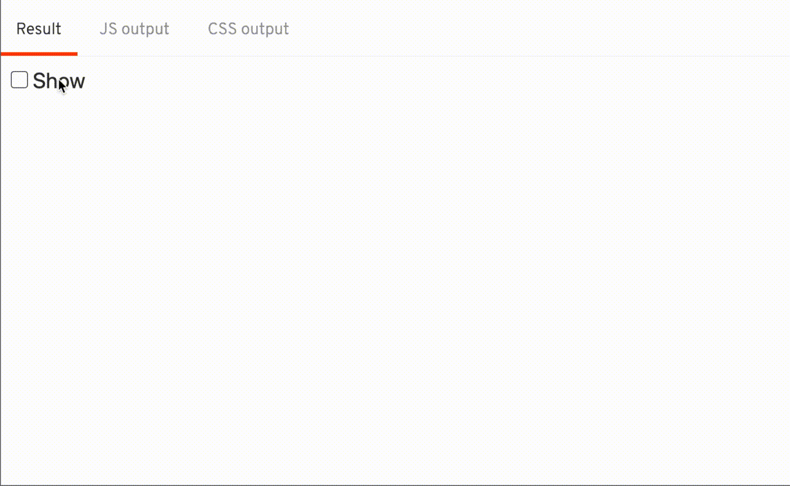
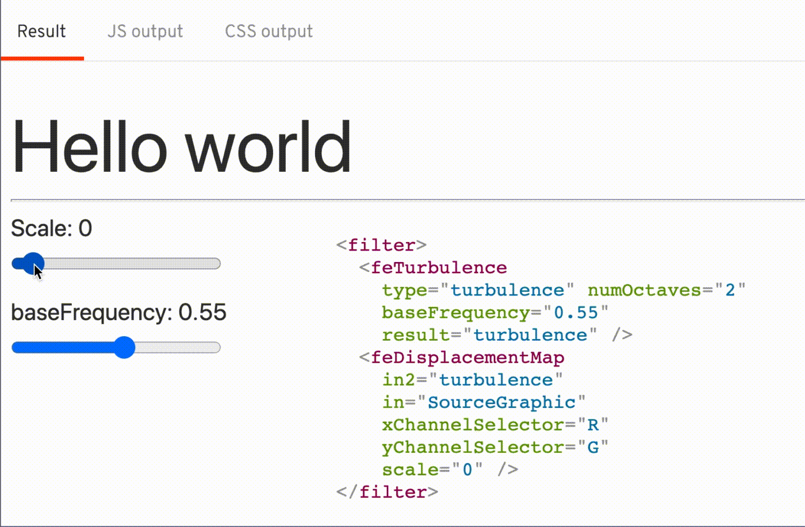

The Result

Break it down
I'm using a combination of SVG filters <feTurbulence>, <feDisplacementMap> to achieve this effect.

To use this SVG filter, I first created a Svelte component for the filter.
The idea is to add this render this filter whenever I want to transition, and update the scale and frequency during the transition
<script>
export let baseFrequency = 0;
export let scale = 0;
export let id;
</script>
<svg height="0" width="0">
<filter {id}>
<feTurbulence
type="turbulence" numOctaves="2"
{baseFrequency}
result="turbulence" />
<feDisplacementMap
in2="turbulence" in="SourceGraphic"
xChannelSelector="R" yChannelSelector="G"
{scale} />
</filter>
</svg>As I'm going to have multiple instance of the SvgFilter, and I don't want the filter id to be conflict with each other, I generated the id everytime there's a new instance of SvgFilter
<script context="module">
let _idx = 0;
</script>
<script>
// ...
export let id = `wave-${_idx++}`;
</script>I created the SvgFilter component as the transition starts and remove it as the transition ends
import SvgFilter from './SvgFilter.svelte';
function wavy(node, params = {}) {
let svgFilter;
node.addEventListener('introstart', createIntro);
// create SvgFilter
function createIntro() {
svgFilter = new SvgFilter({ target: document.body });
node.style.filter = `url(#${svgFilter.id})`;
node.removeEventListener('introstart', createIntro);
node.addEventListener('introend', cleanup);
}
function cleanup() {
svgFilter.$destroy();
node.removeEventListener('introend', cleanup);
}
// ...
}And as the transition ticks by, I set the scale of the SVG filter based on the time, t
function wavy(node, params = {}) {
let svgFilter;
// ...
return {
...params,
tick(t) {
// t 0 -> 1
// scale 100 -> 0
if (svgFilter)
svgFilter.$set({
scale: (1 - t) * 100,
baseFrequency: 0.55,
});
}
}
}Add some fade out using the opacity
function wavy(node, params = {}) {
let svgFilter;
// ...
return {
...params,
css(t) {
// only fade out in the last quarter of the time
// t 1 -> 0.25 -> 0
// opactiy 1 -> 1 -> 0
return t < 0.25 ? `opacity: ${t * 4}` : 'opacity: 1';
}
tick(t) {
// t 0 -> 1
// scale 100 -> 0
if (svgFilter)
svgFilter.$set({
scale: (1 - t) * 100,
baseFrequency: 0.55,
});
}
}
}